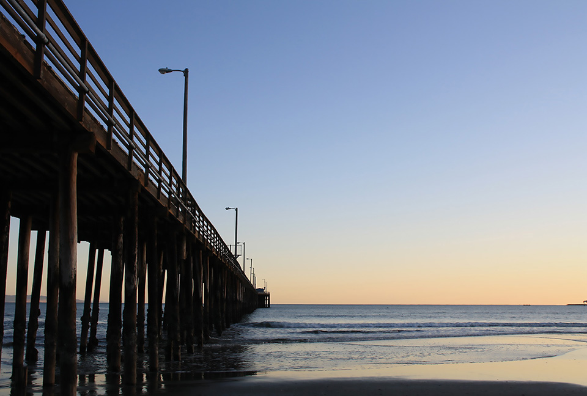
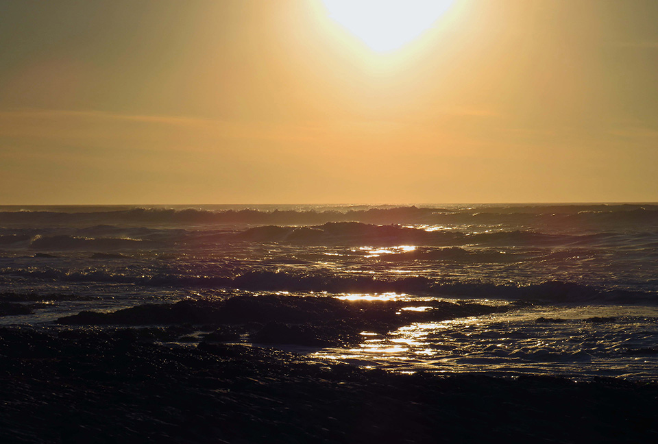
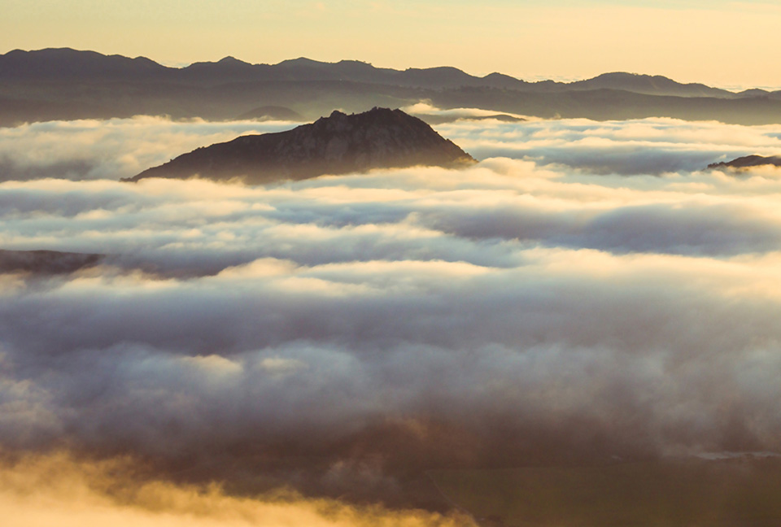
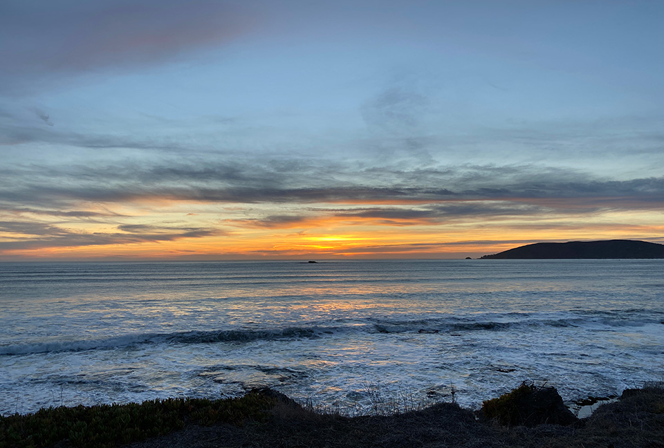
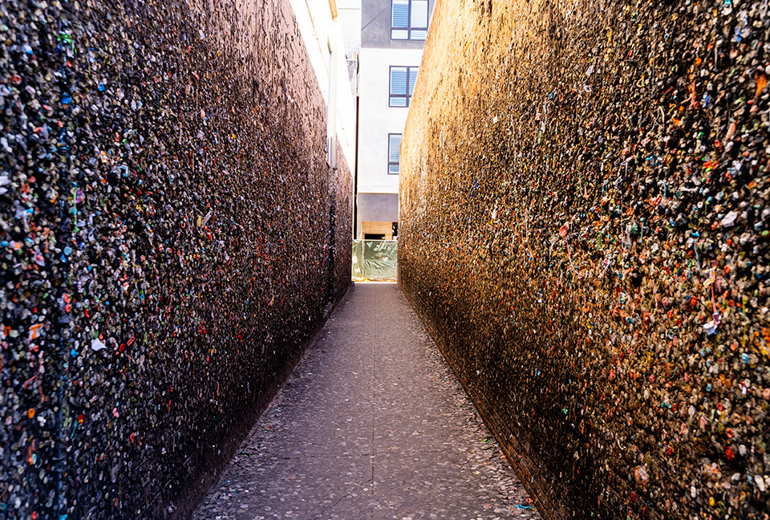
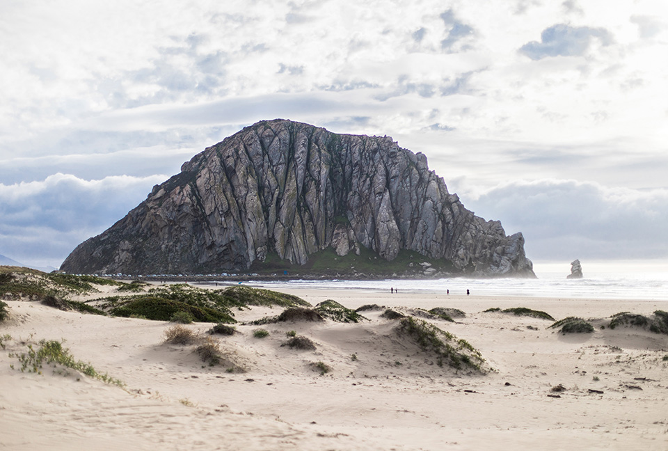
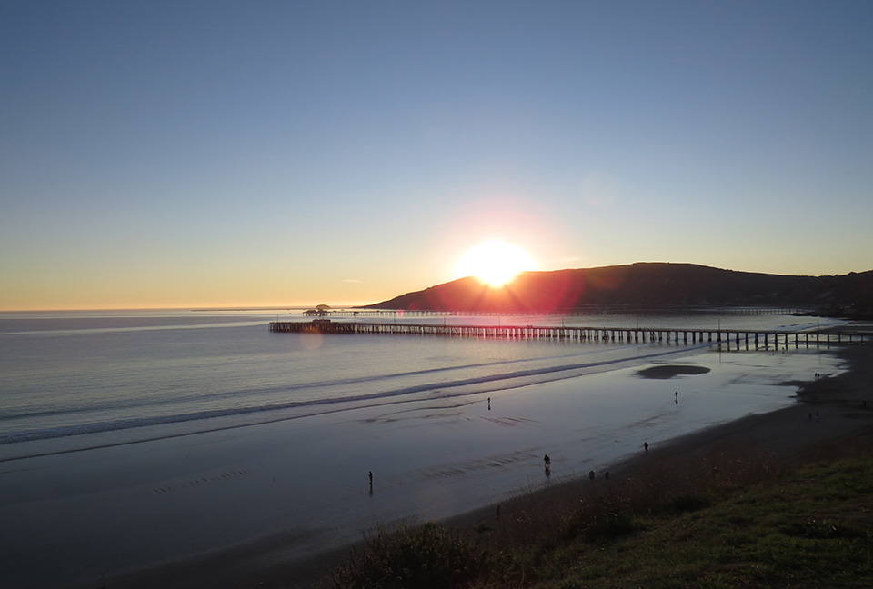

Taken at Avila Beach on the right side of the pier at sunset.

Montana De Oro State park at sunset.

Photo taken from the top of Bishop's Peak as Madonna Peak pokes through the clouds.

View of the sunset from Beachcomber Drive in Shell Beach.

Peering down the right side of Bubblegum alley in broad daylight.

Frontfacing view of Morro Rock during the daylight hours.

View of Avila Beach and the surrounding bay at sunset. Aerial view of the campus at Cal Poly, San Luis Obispo.